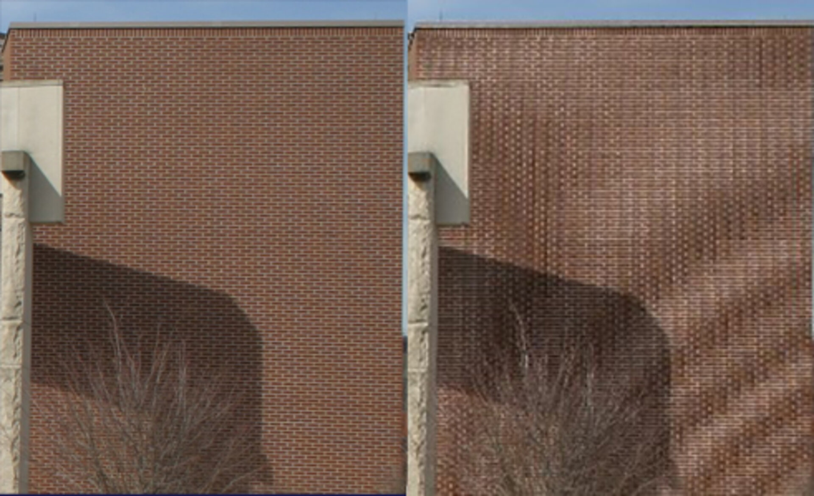
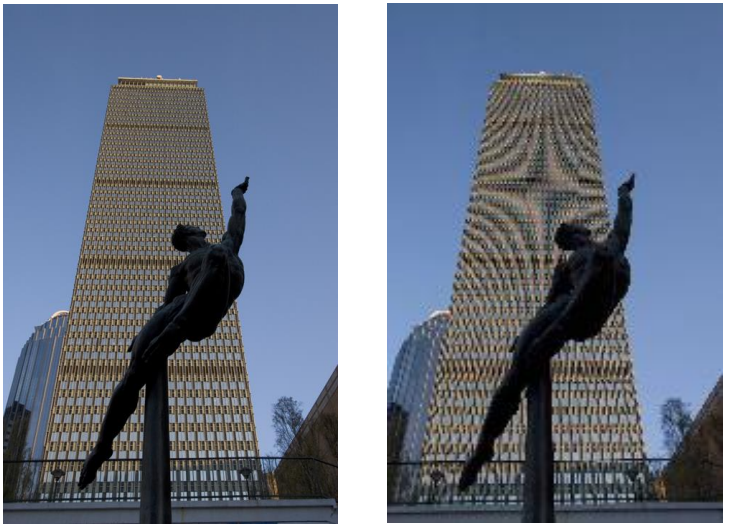
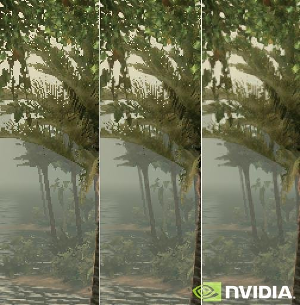
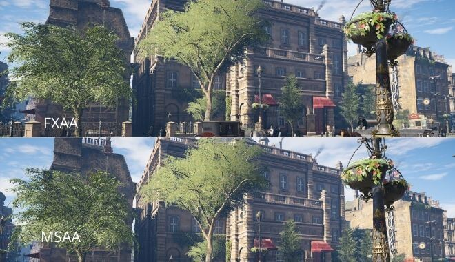

Aliasing e anti aliasing
27 de outubro de 2026
Em computação visual (e em jogos também), uma coisa que aparece bastante é o aliasing. O nome parece meio misterioso, mas é bem fácil de reconhecer: sabe quando uma imagem ou parte de uma imagem fica com um aspecto serrilhado? Isso é o aliasing.

Fonte: https://www.esa.int/ESA_Multimedia/Images/2014/06/Aliasing_illustration
Por que isso acontece?
Uma tela é formada por vários pixels, organizados em uma grade. O problema é que nem tudo que queremos desenhar é perfeitamente horizontal ou vertical. Podemos ter linhas diagonais, círculos, curvas e várias outras formas. Só que uma diagonal perfeita não consegue ser representada exatamente usando uma grade de pixels. Então o computador precisa decidir quais pixels devem ser acesos para tentar representar aquela forma.
O problema da amostragem
O aliasing está relacionado com a forma como uma imagem contínua é transformada em uma imagem digital. No mundo real, podemos imaginar uma linha como algo contínuo. Já no computador, ela precisa ser representada em posições específicas da tela, ou seja, pelos pixels. Esse processo pode ser entendido como uma forma de amostragem. Se tivermos pixels suficientes para representar os detalhes da imagem, o resultado fica bem próximo do original. Mas se a resolução for baixa demais, alguns detalhes podem ser perdidos ou representados de maneira incorreta. É aí que começam a aparecer aqueles serrilhados estranhos.

Fonte: https://ocw.mit.edu/courses/6-837-computer-graphics-fall-2012/d321c1aed9487039532e66f7355d7c9e_MIT6_837F12_Lec17.pdf
Apesar de o exemplo clássico ser uma linha diagonal, o aliasing pode aparecer em várias situações. Por exemplo: bordas de círculos, letras, modelos 3D, texturas, objetos distantes em jogos, padrões com muitas linhas pequenas. Um exemplo bem comum acontece em jogos 3D. Quando há uma grade, uma cerca ou alguma textura com muitos detalhes à distância, ela pode parecer estar piscando, tremendo ou mudando de forma conforme a câmera se movimenta. Isso também pode estar relacionado ao aliasing.

Fonte: https://www.estadao.com.br/minha-serie/cultura-geek/11942-anti-aliasing-fast-approximate/
Como resolver isso?
É aqui que entra o anti-aliasing. Como o próprio nome indica, são técnicas utilizadas para diminuir os efeitos do aliasing. Em vez de simplesmente decidir se um pixel pertence ou não a uma linha, podemos utilizar cores intermediárias para suavizar suas bordas. Por exemplo, imagine uma linha preta em um fundo branco. Sem anti-aliasing, os pixels da borda seriam apenas PRETO ou BRANCO. Com anti-aliasing, podem aparecer diferentes tons de cinza entre eles: PRETO / CINZA ESCURO / CINZA CLARO / BRANCO. Esses pixels intermediários dão a impressão ao nosso olho de que a borda é mais suave.
Tipos de anti-aliasing
Existem várias técnicas diferentes de anti-aliasing.
SSAA — Supersampling Anti-Aliasing
Uma das ideias mais simples é renderizar a imagem em uma resolução maior do que a resolução final. Depois, essa imagem é reduzida. Como existem mais amostras disponíveis durante a renderização, é possível calcular as bordas com mais precisão. O resultado costuma ter uma qualidade muito boa. O problema é que renderizar uma imagem muito maior também exige muito mais processamento.
MSAA — Multisample Anti-Aliasing
O MSAA tenta melhorar o desempenho do supersampling. Em vez de processar toda a imagem várias vezes, ele utiliza várias amostras principalmente nas bordas dos objetos. Por isso, durante muito tempo foi uma técnica bastante utilizada em jogos 3D.
FXAA — Fast Approximate Anti-Aliasing
O FXAA funciona de uma maneira diferente. Ele é aplicado depois que a imagem já foi renderizada. O algoritmo procura bordas com muito contraste e tenta suavizá-las. É uma técnica rápida e relativamente leve, mas pode deixar algumas partes da imagem um pouco borradas.

Fonte: https://gamedesigning.org/gaming/anti-aliasing/
Anti-aliasing sempre é melhor?
Não necessariamente. Aplicar anti-aliasing melhora bastante as bordas, mas também possui um custo. Algumas técnicas exigem mais processamento, outras podem deixar a imagem um pouco borrada e algumas funcionam melhor dependendo da situação. Por isso, jogos costumam oferecer opções diferentes de anti-aliasing nas configurações gráficas. Talvez você já tenha visto alguma opção como Anti-Aliasing: Off, FXAA, MSAA 2x, MSAA 4x, MSAA 8x... Quanto maior o número de amostras, normalmente maior a qualidade das bordas — mas também maior o custo de processamento.
Conclusão
O aliasing acontece quando uma imagem ou objeto possui detalhes que não conseguem ser representados adequadamente pela quantidade de amostras disponíveis. Nas imagens digitais, isso aparece principalmente como bordas serrilhadas, padrões estranhos ou pequenos detalhes que parecem piscar. As técnicas de anti-aliasing tentam diminuir esses efeitos usando mais amostras ou suavizando as bordas da imagem. No fim das contas, aquela opção de "Anti-Aliasing" que aparece nas configurações de quase todo jogo existe basicamente para impedir que nossos círculos virem escadinhas!!
Referências
- Material de aula
- ESA - Aliasing Illustration
- MIT OpenCourseWare - Computer Graphics: Sampling and Aliasing
- Estadão - Anti-Aliasing Fast Approximate
- GameDesigning.org - Anti-Aliasing